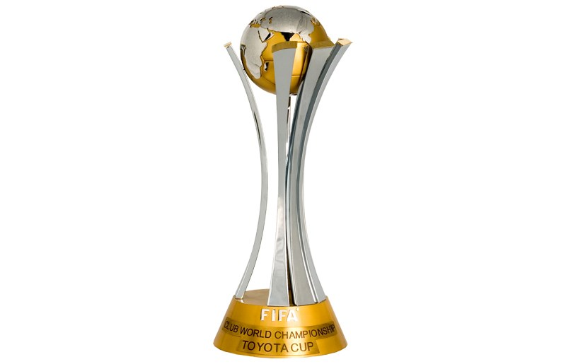
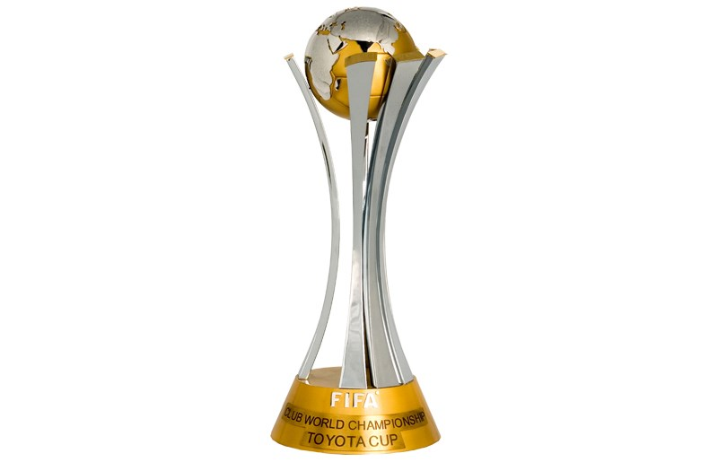

Principal jogo - Copa Do brasil - 07/08


Lateral quer sair vivo do Mineirão para decidir vaga no Beira-Rio
Há 7 horas - Em internacional
Sem D'Ale, volante comandará meio-campo por postura mais agressiva
Há 10 horas - Em internacional
Inter se prepara para duelo contra o clube mineiro pela Copa do Brasil, na quarta-feira
Ontem - Em internacional
Volante trata entorse no tornozelo em Porto Alegre e segue como dúvida contra Cruzeiro
Há 2 dias - Em internacional
Ambos, no entanto, devem estar à disposição para o duelo com o Cruzeiro, na próxima quarta
Há 2 dias - Em internacional
Cerca de cinco torcedores colorados recepcionaram a delegação na noite desta segunda
Há 21 horas - Em internacional
Luís Flávio de Oliveira será o árbitro do jogo desta quarta-feira, no Mineirão, às 21h30 (de Brasília); ele apitou a final da Copa do Brasil entre Cruzeiro e Flamengo, em 2017
Ontem - Em copa do Brasil
 
